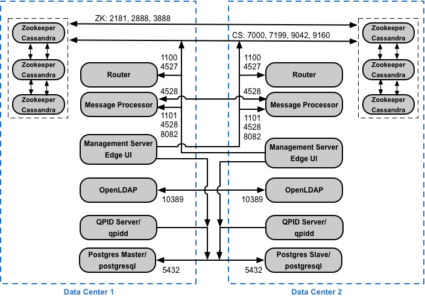
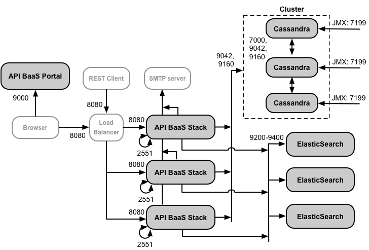

Edge for Private Cloud v. 4.17.05
You must meet the basic hardware configurations that support the basic host installation. For all installation scenarios described above, the following tables list the minimum hardware requirements for the installation components.
In these tables the hard disk requirements are in addition to the hard disk space required by the operating system. Depending on your applications and network traffic, your installation might require more or fewer resources than listed below.
|
Installation Component |
RAM |
CPU |
Minimum hard disk |
|---|---|---|---|
|
Cassandra |
16GB |
8?core |
250GB local storage with SSD or fast HDD supporting 2000 IOPS |
|
Message Processor/Router on same machine |
8/16GB |
4/8?core |
100GB |
|
Analytics - Postgres/Qpid on same server (not recommended for production) |
16GB* |
8-core* |
500GB - 1TB** network storage***, preferably with SSD backend, supporting 1000 IOPS or higher*. |
|
Analytics - Postgres standalone |
16GB* |
8-core* |
500GB - 1TB** network storage***, preferably with SSD backend, supporting 1000 IOPS or higher*. |
|
Analytics - Qpid standalone |
8GB |
4-core |
30GB - 50GB local storage with SSD or fast HDD For installations greater than 250 TPS, HDD with local storage supporting 1000 IOPS is recommended. The default Qpid queue size is 20 GB. If you need to add more capacity, add additional Qpid nodes. |
|
Other (OpenLDAP, UI, Management Server) |
4GB |
2-core |
60GB |
|
*Adjust Postgres system requirements based on throughput:
|
|||
|
**The Postgres hard disk value is based on the out of the box analytics captured by Edge. If you add custom values to the analytics data, then these values should be increased accordingly. Use the following formula to estimate the required storage: |
|||
|
*** Network Storage is recommended for Postgresql database because:
|
|||
In addition, the following lists the hardware requirements if you wish to install the Monetization Services:
|
Component with Monetization |
RAM |
CPU |
Hard disk |
|---|---|---|---|
|
Management Server (with Monetization Services) |
8GB |
4?core |
60GB |
|
Analytics - Postgres/Qpid on same server |
16GB |
8-core |
500GB - 1TB network storage, preferably with SSD backend, supporting 1000 IOPS or higher, or use the rule from the table above. |
|
Analytics - Postgres standalone |
16GB |
8-core |
500GB - 1TB network storage, preferably with SSD backend, supporting 1000 IOPS or higher, or use the rule from the table above. |
|
Analytics - Qpid standalone |
8GB |
4-core |
40GB - 500GB local storage with SSD or fast HDD For installations greater than 250 TPS, HDD with local storage supporting 1000 IOPS is recommended. |
The following lists the hardware requirements if you wish to install API BaaS:
|
API BaaS Component |
RAM |
CPU |
Hard disk |
|---|---|---|---|
|
ElasticSearch* |
8GB |
4?core |
60 - 80GB |
|
API BaaS Stack * |
8GB |
4?core |
60 - 80GB |
|
API BaaS Portal |
1GB |
2-core |
20GB |
|
Cassandra (Optional — typically you use the same Cassandra cluster for both Edge and API BaaS Services) |
16GB |
8-core |
250GB local storage with SSD or fast HDD supporting 2000 IOPS |
|
* You can install ElasticSearch and API BaaS Stack on the same node. If you do, configure ElasticSearch to use 4GB of memory (default). If ElasticSearch is installed on its own node, then configure it to use 6GB of memory. |
|||
Note:
These installation instructions and the supplied installation files have been tested on the operating systems and third-party software listed here: https://apigee.com/docs/api-services/reference/supported-software.
The installation procedure creates a Unix system user named 'apigee'. Edge directories and files are owned by 'apigee', as are Edge processes. That means Edge components run as the 'apigee' user. if necessary, you can run components as a different user. See "Binding the Router to a protected port" in http://docs.apigee.com/node/19901 for an example.
By default, the installer writes all files to the /opt/apigee directory. You cannot change this directory location. While you cannot change this directory, you can create a symlink to map /opt/apigee to another location, as described below.
In the instructions in this guide, the installation directory is noted as /<inst_root>/apigee, where /<inst_root> is /opt by default.
Before you create the symlink, you must first create a user and group named "apigee". This is the same group and user created by the Edge installer.
To create the symlink, perform these steps before downloading the bootstrap_4.17.01.sh file. You must perform all of these steps as root:
You need a supported version of Java1.8 installed on each machine prior to the installation. Supported JDKs are listed here:
https://apigee.com/docs/api-services/reference/supported-software
Ensure that JAVA_HOME points to the root of the JDK for the user performing the installation.
Depending on your settings for SELinux, Edge can encounter issues with installing and starting Edge components. If necessary, you can disable SELinux or set it to permissive mode during installation, and then re-enabling it after installation. See http://docs.apigee.com/node/19896 for more.
It is recommended to check the network setting prior to the installation. The installer expects that all machines have fixed IP addresses. Use the following commands to validate the setting:
Depending on your operating system type and version, you might have to edit /etc/hosts and /etc/sysconfig/network if the hostname is not set correctly. See the documentation for your specific operating system for more information.
TCP Wrappers can block communication of some ports and can affect OpenLDAP, Postgres, and Cassandra installation. On those nodes, check /etc/hosts.allow and /etc/hosts.deny to ensure that there are no port restrictions on the required OpenLDAP, Postgres, and Cassandra ports.
Validate that there are no iptables policies preventing connectivity between nodes on the required Edge ports. If necessary, you can stop iptables during installation using the command:
> sudo/etc/init.d/iptables stop
On CentOS 7.x:
> systemctl stop firewalld
The Edge Router and BaaS Portal nodes use the Nginx router and require read access to /etc/rc.d/init.d/functions.
If your security process requires you to set permissions on /etc/rc.d/init.d/functions, do not set them to 700 or else the router will fail to start. Permissions can be set to 744 to allow read access to /etc/rc.d/init.d/functions.
All Cassandra nodes have to be connected to a ring. Cassandra stores data replicas on multiple nodes to ensure reliability and fault tolerance. The replication strategy for each Edge keyspace determines the Cassandra nodes where replicas are placed. For more,see http://docs.apigee.com/node/22886.
Cassandra automatically adjusts its Java heap size based on the available memory. For more, see Tuning Java resources. In the event of a performance degradation or high memory consumption.
After installing the Edge for Private Cloud, you can check that Cassandra is configured correctly by examining the /<inst_root>/apigee/apigee-cassandra/conf/cassandra.yaml file. For example, ensure that the Edge for Private Cloud installation script set the following properties:
Warning: Do not edit this file.
After you install Edge, you can adjust the following PostgreSQL database settings based on the amount of RAM available on your system:
conf_postgresql_shared_buffers = 35% of RAM # min 128kB conf_postgresql_effective_cache_size = 45% of RAM conf_postgresql_work_mem = 512MB # min 64kB
These settings assume that the PostgreSQL database is only used for Edge analytics, and not for any other purpose.
To set these values:
Ensure that you have set the following system limits on Cassandra and Message Processor nodes:
"jsvc" is a prerequisite for using API BaaS. Version 1.0.15-dev is installed when you install the API BaaS.
Network Security Services (NSS) is a set of libraries that supports development of security-enabled client and server applications. You should ensure that you have installed NSS v3.19, or later.
To check your current version:
> yum info nss
To update NSS:
> yum update nss
See this article from RedHat for more information.
If you have installed and enabled NSCD (Name Service Cache Daemon) the Message Processors makes two DNS lookups: one for IPv4 and one for IPv6. You should disable DNS lookup on IPv6 when using NSCD.
To disable the DNS lookup on IPv6:
If you are installing Edge on an AWS Amazon Machine Image (AMI) for Red Hat Enterprise Linux 7.x, you must first run the following command:
> yum-config-manager --enable rhui-REGION-rhel-server-extras rhui-REGION-rhel-server-optional
The installer uses the following UNIX tools in the standard version as provided by EL5 or EL6.
|
awk |
expr |
lua-socket |
rpm |
unzip |
|
basename |
grep |
ls |
rpm2cpio |
useradd |
|
bash |
hostname |
net-tools |
sed |
wc |
|
bc |
id |
perl (from procps) |
sudo |
wget |
|
curl |
libaio |
pgrep (from procps) |
tar |
xerces-c |
|
cyrus-sasl
|
libdb-cxx
|
ps | tr | yum |
|
date |
libibverbs
|
pwd |
uuid |
chkconfig |
| dirname |
librdmacm
|
python | uname | |
| echo |
libxslt
|
Note:
ntpdate – It is recommended to have the servers time synchronized. If not already configured, ‘ntpdate’ utility could serve this purpose, which verifies whether servers are time synchronized. You can use “yum install ntp” to install the utility. This is particularly useful for replicating OpenLDAP setups. Note that you set up server time zone in UTC.
openldap 2.4 – The on-premises installation requires OpenLDAP 2.4. If your server has an Internet connection, then the Edge install script downloads and installs OpenLDAP. If your server does not have an Internet connection, you must ensure that OpenLDAP is already installed before running the Edge install script. On RHEL/CentOS, you can run "yum install openldap-clients openldap-servers" to install the OpenLDAP.
For 13-host installations, and 12-host installations with two Data Centers, you require OpenLDAP replication because there are multiple nodes hosting OpenLDAP.
The term “virtual” commonly gets overloaded in the IT arena, and so it is with an Apigee Edge for Private Cloud deployment and virtual hosts. To clarify, there are two primary uses of the term “virtual”:
A router in a VM can expose multiple virtual hosts (as long as they differ from one another in their host alias or in their interface port).
Just as a naming example, a single physical server “A” might be running two VMs, named “VM1” and “VM2”. Let’s assume VM1 exposes a virtual Ethernet interface, which gets named eth0 inside the VM, and which is assigned IP address 111.111.111.111 by the virtualization machinery or a network DHCP server; and then assume VM2 exposes a virtual Ethernet interface also named eth0 and it gets assigned an IP address 111.111.111.222.
We might have an Apigee router running in each of the two VMs. The routers expose virtual host endpoints as in this hypothetical example:
The Apigee router in VM1 exposes three virtual hosts on its eth0 interface (which has some specific IP address), api.mycompany.com:80, api.mycompany.com:443, and test.mycompany.com:80.
The router in VM2 exposes api.mycompany.com:80 (same name and port as exposed by VM1).
The physical host’s operating system might have a network firewall; if so, that firewall must be configured to pass TCP traffic bound for the ports being exposed on the virtualized interfaces (111.111.111.111:{80, 443} and 111.111.111.222:80). In addition, each VM’s operating system may provide its own firewall on its eth0 interface and these too must allow ports 80 and 443 traffic to connect.
The basepath is the third component involved in routing API calls to different API proxies that you may have deployed. API proxy bundles can share an endpoint if they have different basepaths. For example, one basepath can be defined as http://api.mycompany.com:80/ and another defined as http://api.mycompany.com:80/salesdemo.
In this case, you need a load balancer or traffic director of some kind splitting the http://api.mycompany.com:80/ traffic between the two IP addresses (111.111.111.111 on VM1 and 111.111.111.222 on VM2). This function is specific to your particular installation, and is configured by your local networking group.
The basepath is set when you deploy an API. From the above example, you can deploy two APIs, mycompany and testmycompany, for the organization mycompany-org with the virtual host that has the host alias of api.mycompany.com and the port set to 80. If you do not declare a basepath in the deployment, then the router does not know which API to send incoming requests to.
However, if you deploy the API testmycompany with the base URL of /salesdemo, then users access that API using http://api.mycompany.com:80/salesdemo. If you deploy your API mycompany with the base URL of / then your users access the API by the URL http://api.mycompany.com:80/.
The need to manage the firewall goes beyond just the virtual hosts; both VM and physical host firewalls must allow traffic for the ports required by the components to communicate with each other.
The following image shows the ports requirements for each Edge component:
Notes on this diagram:
The table below shows the ports need to be opened in firewalls, by Edge component:
|
Component |
Port |
Description |
|---|---|---|
|
Standard HTTP ports |
80, 443 |
HTTP plus any other ports you use for virtual hosts |
|
Management Server |
8080 |
Port for Edge management API calls. These components require access to port 8080 on the Management Server: Router, Message Processor, UI, Postgres, and Qpid. |
|
1099 |
JMX port |
|
|
4526 |
For distributed cache and management calls |
|
|
Management UI |
9000 |
Port for browser access to management UI |
|
Message Processor |
8998 |
Message Processor port for communications from Router |
|
8082 |
Default management port for Message Processor and must be open on the component for access by the Management Server. If you configure TLS/SSL between the Router and Message Processor, used by the Router to make health checks on the Message Processor.
|
|
|
1101 |
JMX port |
|
|
4528 |
For distributed cache and management calls between Message Processors, and for communication from the Router |
|
|
Router |
8081 |
Default management port for Router and must be open on the component for access by the Management Server. |
|
4527 |
For distributed cache and management calls |
|
|
15999 |
Health check port. A load balancer uses this port to determine if the Router is available. To get the status of a Router, the load balancer makes a request to port 15999 on the Router: > curl -v http://<routerIP>:15999/v1/servers/self/reachable If the Router is reachable, the request returns HTTP 200. |
|
|
59001 |
Port used for testing the Edge installation by the apigee-validate utility. This utility requires access to port 59001 on the Router. See http://docs.apigee.com/node/19906 for more on port 59001. |
|
|
ZooKeeper |
2181 |
Used by other components like Management Server, Router, Message Processor and so on |
|
2888, 3888 |
Used internally by ZooKeeper for ZooKeeper cluster (known as ZooKeeper ensemble) communication |
|
|
Cassandra |
7000, 9042, 9160 |
Apache Cassandra ports for communication between Cassandra nodes and for access by other Edge components. |
|
7199 |
JMX port. Must be open for access by the Management Server. |
|
|
Qpid |
5672 |
Used for communications from the Router and Message Processor to Qpid server |
|
8083 |
Default management port on Qpid server and must be open on the component for access by the Management Server. |
|
|
1102 |
JMX port |
|
|
4529 |
For distributed cache and management calls |
|
|
Postgres |
5432 |
Used for communication from Qpid/Management Server to Postgres |
|
8084 |
Default management port on Postgres serverand must be open on the component for access by the Management Server. |
|
|
1103 |
JMX port |
|
|
4530 |
For distributed cache and management calls |
|
|
22 |
If configuring two Postgres nodes to use master-standby replication, you must open port 22 on each node for ssh access. |
|
|
LDAP |
10389 |
OpenLDAP |
|
SmartDocs |
59002 |
The port on the Edge router where SmartDocs page requests are sent. |
The next table shows the same ports, listed numerically, with the source and destination components:
|
Port Number |
Purpose |
Source Component |
Destination Component |
|---|---|---|---|
|
<virtual host port#> |
HTTP plus any other ports you use for virtual host API call traffic. Ports 80 and 443 are most commonly used; the Message Router can terminate TLS/SSL connections. |
External client (or load balancer) |
Listener on Message Router |
|
1099 through 1103 |
JMX Management |
JMX Client |
Management Server (1099) Message Processor (1101) Qpid Server (1102) Postgres Server (1103) |
|
2181 |
Zookeeper client communication |
Management Server Router Message Processor Qpid Server Postgres Server |
Zookeeper |
|
2888 and 3888 |
Zookeeper internode management |
Zookeeper |
Zookeeper |
|
4526 through 4530 |
RPC Management ports used for distributed cache and calls from the Management Servers to the other components |
Management Server |
Management Server (4526) Router (4527) Message Processor (4528) Qpid Server (4529) Postgres Server (4530) |
|
4528 |
For distributed cache calls between Message Processors, and for communication from the Router |
Router Message Processor |
Message Processor |
|
5432 |
Postgres client |
Qpid Server |
Postgres |
|
5672 |
Used for sending analytics from Router and Message Processor to Qpid |
Router Message Processor |
Qpid Server |
|
7000 |
Cassandra inter-node communications |
Cassandra |
Other Cassandra node |
|
7199 |
JMX management. Must be open for access on the Cassandra node by the Management Server. |
JMX client |
Cassandra |
|
8080 |
Management API port |
Management API clients |
Management Server |
|
8081 through 8084 |
Component API ports, used for issuing API requests directly to individual components. Each component opens a different port; the exact port used depends on the configuration but must be open on the component for access by the Management Server |
Management API clients |
Router (8081) Message Processor (8082) Qpid Server (8083) Postgres Server (8084) |
|
8998 |
Communication between Router and Message Processor |
Router |
Message Processor |
|
9000 |
Default Edge management UI port |
Browser |
Management UI Server |
|
9042 |
CQL native transport |
Router Message Processor Management Server |
Cassandra |
|
9160 |
Cassandra thrift client |
Router Message Processor Management Server |
Cassandra |
|
10389 |
LDAP port |
Management Server |
OpenLDAP |
| 15999 |
Health check port. A load balancer uses this port to determine if the Router is available. |
Load balancer | Router |
| 59001 | Port used by the apigee-validate utility to test the Edge installation | apigee-validate | Router |
|
59002 |
The router port where SmartDocs page requests are sent |
SmartDocs |
Router |
A message processor keeps a dedicated connection pool open to Cassandra, which is configured to never timeout. When a firewall is between a message processor and Cassandra server, the firewall can time out the connection. However, the message processor is not designed to reestablish connections to Cassandra.
To prevent this situation, Apigee recommends that the Cassandra server, message processor, and routers be in the same subnet so that a firewall is not involved in the deployment of these components.
If a firewall is between the router and message processors, and has an idle tcp timeout set, our recommendations is to:
If you install the 12 host clustered configuration with two Data Centers, ensure that the nodes in the two Data Centers can communicate over the ports shown below:

If you opt to install the API BaaS, you add the API BaaS Stack and API BaaS Portal components. These components use the ports shown in the figure below:

Notes on this diagram:
The table below shows the default ports that need to be opened in firewalls, by component:
|
Component |
Port |
Description |
|---|---|---|
|
API BaaS Portal |
9000 |
Port for the API BaaS UI |
|
API BaaS Stack |
8080 |
Port where API request are received |
| 2551 |
Port for communication among all Stack nodes. Must be accessible by all other Stack nodes in the data canter. If you have multiple data centers, the port must be accessible from all Stack nodes in all Data Centers. |
|
|
ElasticSearch |
9200 to 9400 |
For communicating with API BaaS Stack and for communicating between ElasticSearch nodes |
Each installation of Edge requires a unique license file that you obtain from Apigee. You will need to provide the path to the license file when installing the management server, for example /tmp/license.txt.
The installer copies the license file to /<inst_root>/apigee/customer/conf/license.txt.
If license file is valid, the management server validates the expiry and allowed Message Processor (MP) count. If any of the license settings is expired, you can find the logs in the following location: /<inst_root>/apigee/var/log/edge-management-server/logs. In this case you can contact Apigee Support for migration details.